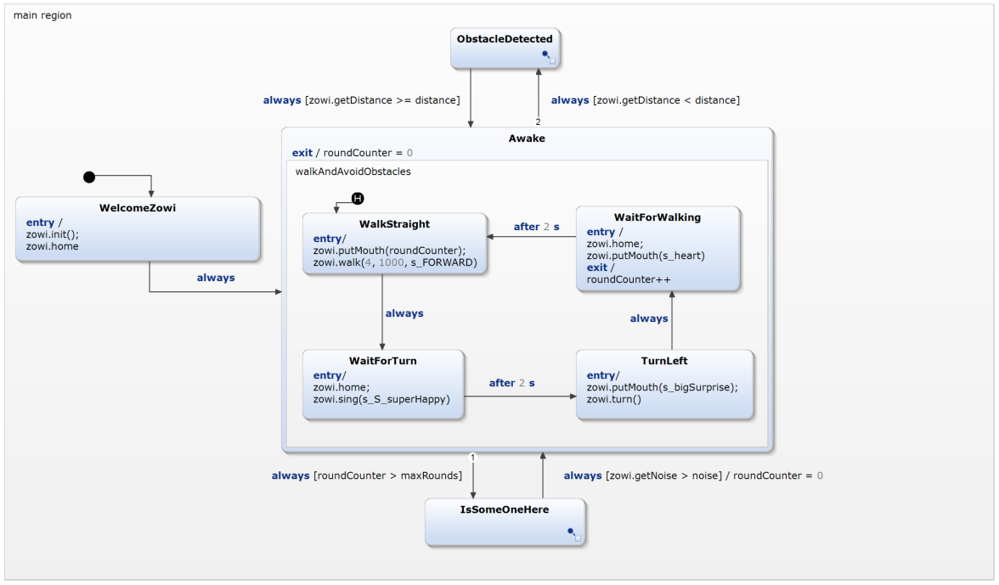

Zowi (C++)
This is a example of how to use the Default Domain together with the Zowi by BQ, which is based on an Arduino Uno. C++ Timers are integrated.

The statechart contains four states. Firstly, the Zowi will be initialized. After this, Zowi is awake and tries to walk a circle. If maximum amount of rounds is reached he will wait for some noise. If something is in his way he will detect it and stop walking. The underlying statechart looks like the following:

Addons for compiling and flashing
For compiling and flashing the Eclipse C++ IDE for Arduino plugin has been used. This can be found at the Eclipse Marketplace''.
How to install the Eclipse C++ IDE for Arduino plugin
There are the following two ways of installing:(Recommended) Auto-Install of all Dependencies
The following instructions show a simple way of installing the Dependencies via an integrated wizard.- Click on 'File' -> 'New' -> 'Example...' -> 'YAKINDU SCT' -> 'YAKINDU Statechart Examples' and then 'Next >'.
- Search for 'Embedded Systems' -> 'Zowi (C++)' and click the button on the top right called 'Install Dependencies...'
- Click through the wizard until you are finished.
(Alternative) Manual installation of all Dependencies
This instructions shows step by step of how to install the plugin.
- Click on 'Help' -> 'Install New Software..' -> 'Add...'.
- Define a name and add 'http://download.eclipse.org/tools/cdt/releases/9.3' as location. Notice that this update site could be outdated. The current update site can be found on the marketplace.
- Use the filter and type 'Arduino C++ Tools'. Choose this feature and click on 'Next..'. Follow installation instructions.
- The installation dialog will ask you for a restart. After this restart is done, the installation has been finished.
Download the required platform and libraries
At first the required platform and libraries have to be installed:
- Click on 'Help' ->'Arduino Download Manager'.
- In the 'Platforms' tab, install the 'arduino' package named 'Arduino AVR Boards'. In this example version 1.6.23 has been used.
- In the 'Libraries' tab, install the 'Servo' library, which can be found under 'Device Control'. In this example version 1.1.3 has been used.
Add the required platform and libraries
Then it's required to add the libraries to the project
- Right click the Zowi example propject and click on 'Properties'.
- Open the libraries tab and add 'Servo' and 'EEPROM'. This is shown on the following figure:

Compile and flash
At least the 'Launch Configuration' needs to be configured:
- Plug in the Zowi and click on 'New Launch Target..'. This can be found in the upper left corner by clicking on the menu 'on:'.
- Name: Choose a name
- Port: Choose the port
- Board Type: Arduino/Genuino Uno
- Programmer: AVR ISP
- Click on 'Finish'
- Press the button
 at the Top left to build the Project.
at the Top left to build the Project. - Press the button
 at the Top left to run the Project on the Zowi.
at the Top left to run the Project on the Zowi.

After this you are done and your Zowi should start moving!